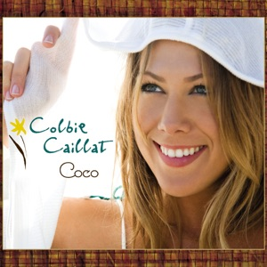
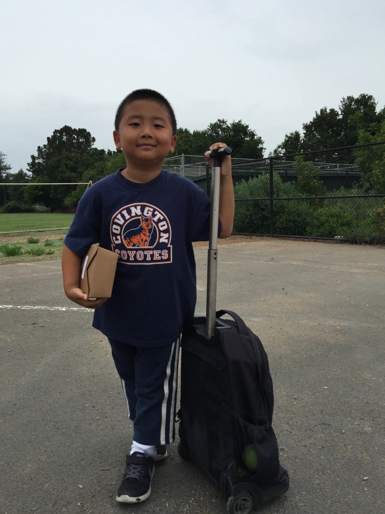
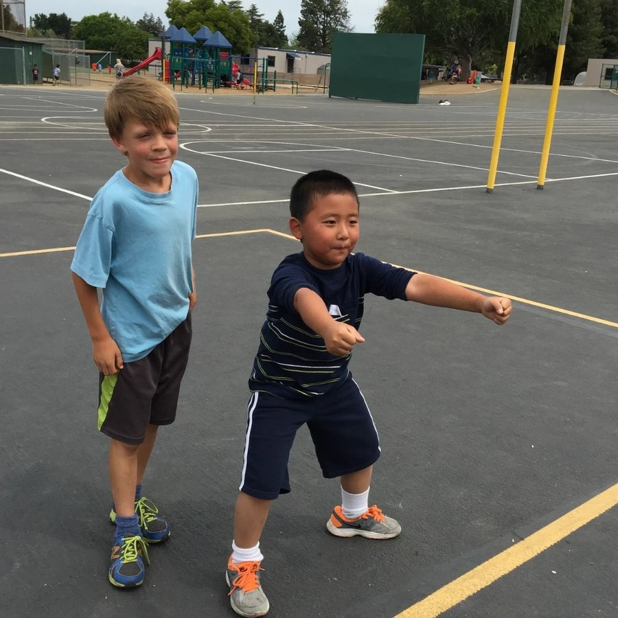
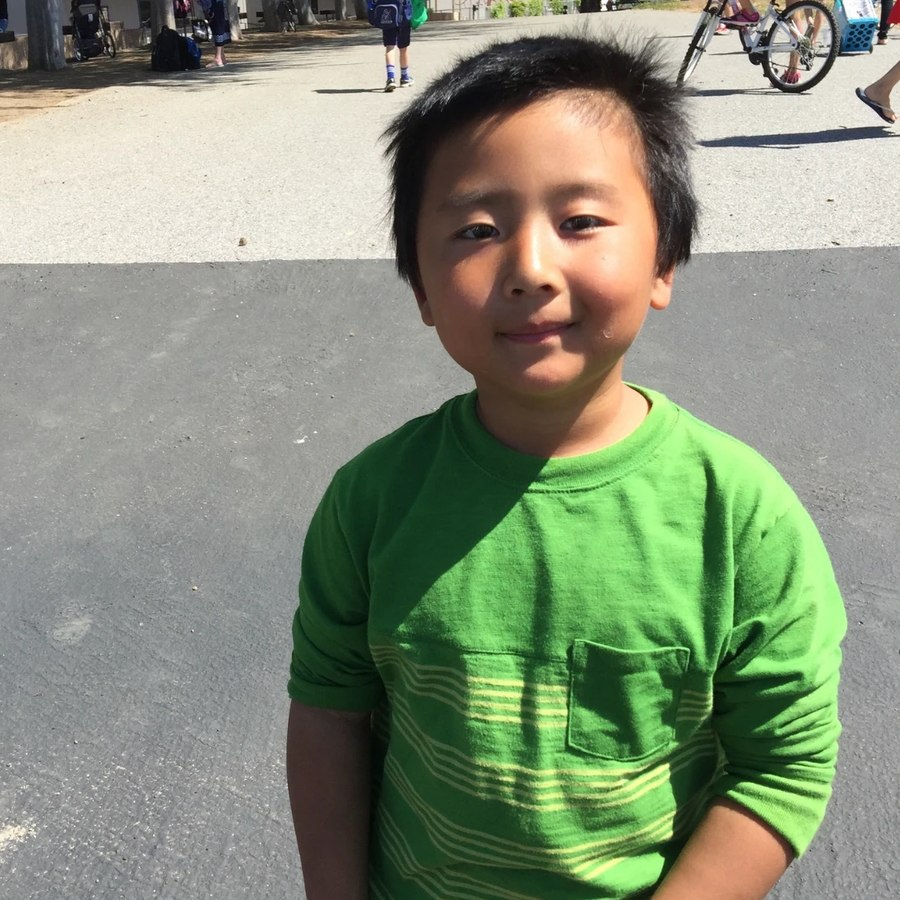
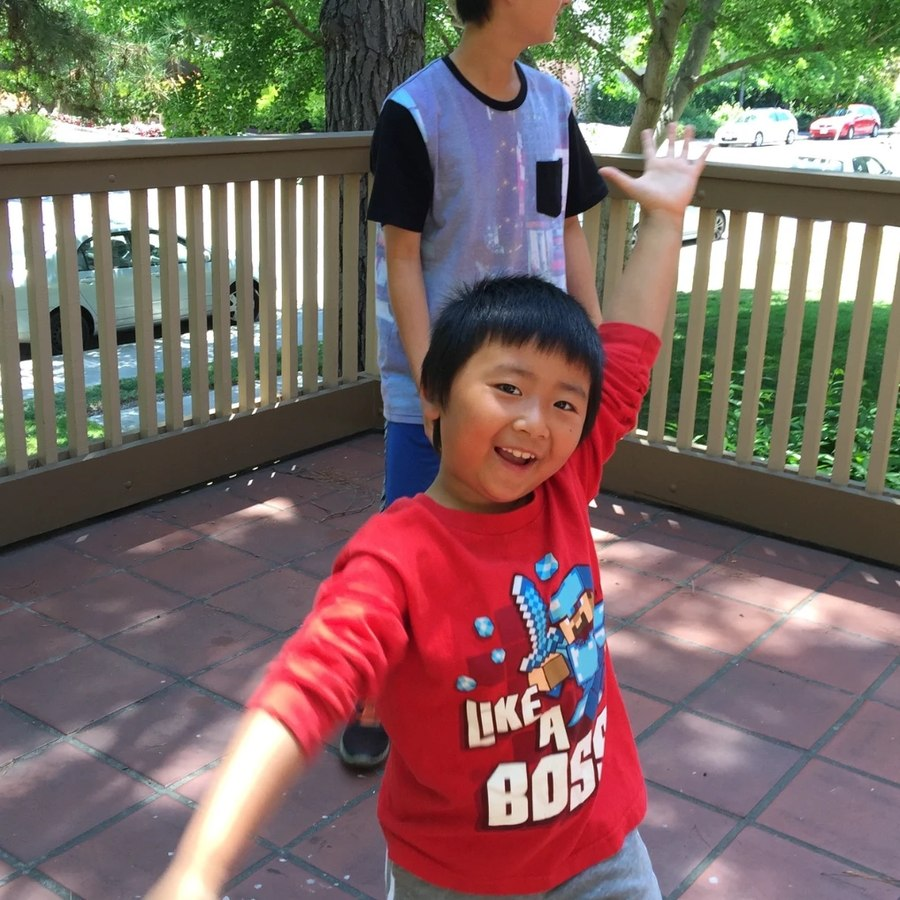
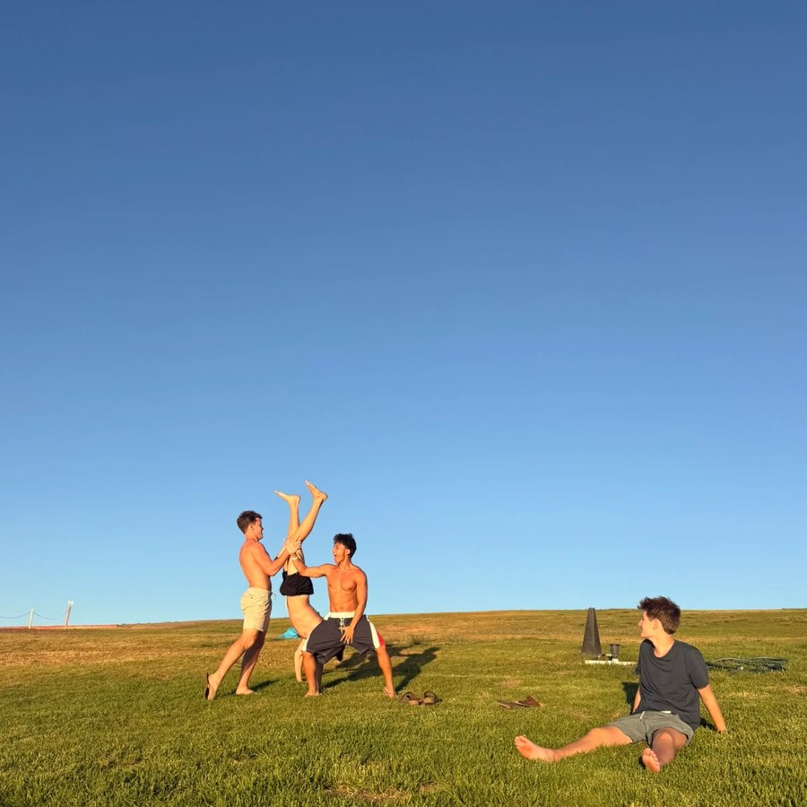
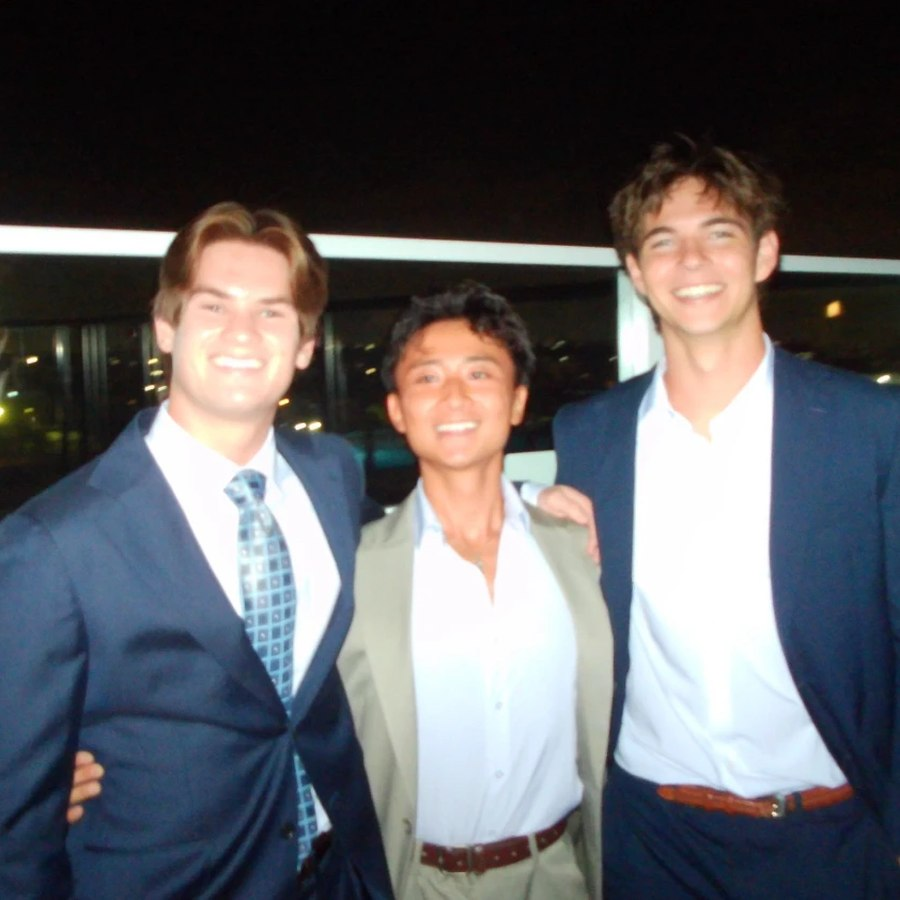
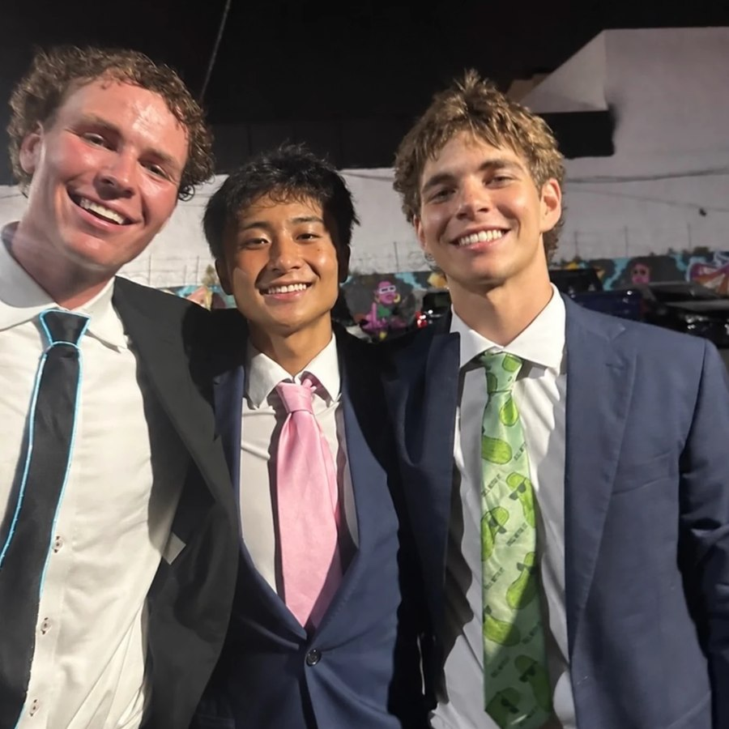
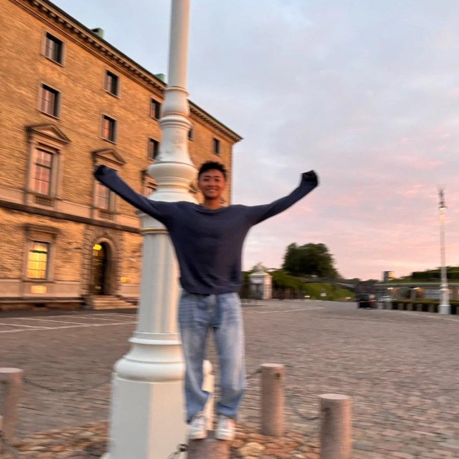
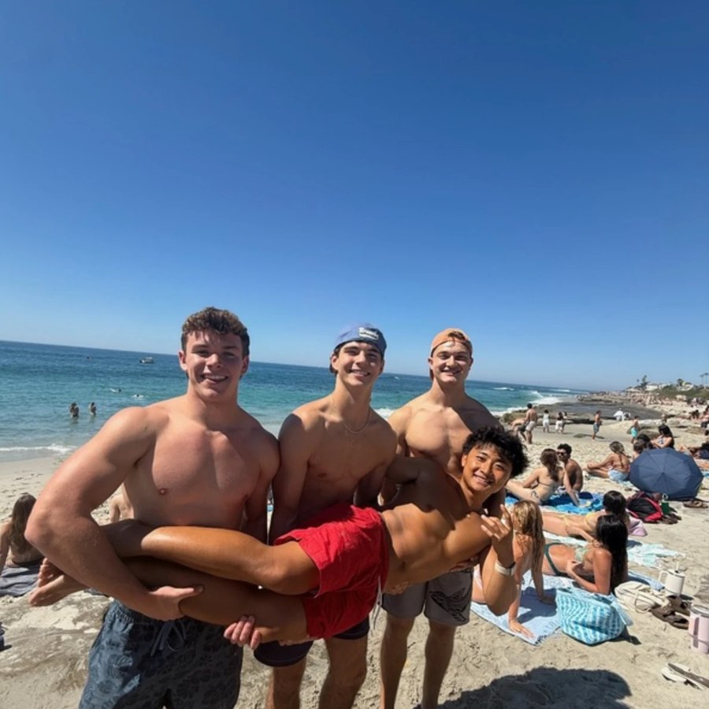

So who is Francis
So Who Is Francis?

When I was interviewed for a paper after giving my graduation speech, they asked me to choose a teacher who would speak highly of me. I smiled, and chose the teacher who seemed least fond of me. My heart smiled when I read her quote.
Senior Francis Ruan is hard to miss.
“Francis is an instigator, getting everyone riled up and distracted in a very enthusiastic way,” Trigonometry Honors teacher Jeanne Yu said. “He is the kind of student who gives the teacher a headache while in class, and then the teacher goes home and secretly laughs about all his antics.”

I love life. Not in the polished, greeting-card way, but in the full, messy, wide-open way. I love waking up. I love living.
There have been hard days, more than a few, and there will be many more ahead. I welcome them. Hard days are how I learned to stand, and every one of them still came with a sunrise. I’ve found that there can be stress without worry. I love working hard, really hard, the kind of hard that leaves you tired and full at the same time. Pressure is a privilege. It means something matters.
I am not better than anyone, but no one is better than me. I carry that sentence like a compass. It keeps me humble enough to listen and steady enough to stand tall in any room. And in every room, I believe each person has something I can learn. The janitor, the CEO, the quiet kid in the back: everyone is carrying a story I haven’t read yet.
I want to try everything. If I could, I would be everywhere all at once. I never order the same thing twice at a restaurant, because how could I, when there’s a whole menu of lives I haven’t tasted yet? Maybe the next dish is a mistake. Good. Now I have a story.
No matter how old I get, I refuse to lose my childishness. I don’t believe in that kind of growing up. I know the weight of respect, of listening, of showing up with professionalism, and I hold all of it close. But none of it asks me to give up my imagination, my dumb curiosity, or my love of being gloriously, unapologetically corny. I love being silly. I love the bad pun, the goofy dance, the joke that only lands with one person. Life is far too short to take yourself too seriously, and far too long to spend it without laughing. And I love laughing. The real kind, the kind that sneaks up from your stomach and won’t let you breathe.
I believe the grass is greener wherever it is I step. Not because the ground is perfect, but because I’ve decided to tend it.
I love people. I love loving. Some call me a pushover, and maybe they’re right. But on my deathbed, I will smile knowing that I cared, that I gave, that I chose an open hand over a closed fist every time I could. I’d rather be fooled now and then than live guarded forever.
I love learning about almost everything. The history of moustaches. The terracotta army standing silent for two thousand years. The origins of tangerines. Why avocados have pits at all. The world is a library with no closing time, and I want to wander every aisle.
I love learning about longevity, about taking care of the body and mind I’ve been given. I love working out, pushing myself past the edges of what people think I can be. Every rep is a quiet conversation with the version of me I haven’t met yet, and I’m always excited to meet him.
I want to be whole and then some. Not finished, never finished, but full. Full of wonder, full of gratitude, full of the stubborn belief that tomorrow could be the best day yet.
So here I am. Curious, corny, hungry, hopeful.
Wildly, wonderfully alive.








If you have made it this far you may as well introduce yourself. fyruan@usc.edu